Chapter 10: Advanced Acoustical Investigations

A d v a n c e d A c o u s t i c a l I n v e s t i g a t i o n s

209
EASE 4.3 User’s Guide & Tutorial

Chapter 10: Advanced Acoustical Investigations
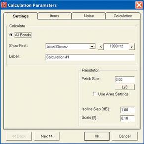
All the Mapping functions we reviewed in Room Investigations are avail-able in both EASE and EASE JR. Now, it's time to move on to simula-tions that are available only to EASE users.
Local Decay Times
EASE 4.3 has the ability to quickly develop RT Times based on reflection studies. The Eyring or Sabine formulas EASE JR and EASE use to calcu-late RT times are generalized formulas that don't apply to every room.
For example, they assume the room's absorption material is distributed homogeneously on the room's surfaces, a condition that doesn't exist in every room. The RT Times are also a single set of times for the entire room while in real life the RT Times from one location to another.
Local Decay Time provides a quick check on the accuracy of these for-mulas, as well as providing RT projections for specific points within the room. It uses an omnidirectional source to distribute Rays throughout the room and calculates the RT Time from their decay. The result is RT Times that are more "real life" figures.
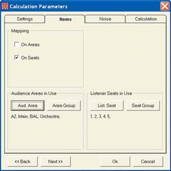
Select Local Decay Times is accessed in either Area Mapping or Room Mapping from the Mapping pull down menu. We used Area Mapping which opened the Calculation Parameters’ setup window shown here. Note that it is similar to the one we have been using in Area Mapping, but doesn't have a Loudspeaker selection section. The reason is that the sys-tem loudspeakers won't be used to calculate the Local Decay Times. In-stead an omnidirectional source will be used. This simulation is interested only in the room's decay times.
Press Next to bring up the second setup window which also should look familiar.
Note that you have a choice of Mapping on Seats or Areas or both. Al-though you can map on Areas, we suggest Mapping on only the Seats. Mapping on Areas will take a considerable amount of time because of the number of points involved, which defeats our objective of doing a quick check. Select Seats and then use the List Seat button to select all 5 of the Listener Seats.
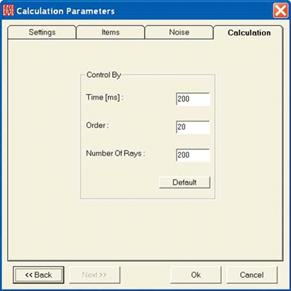
Now, press Next to open the Noise setup window; accept the default set-tings and press Next to move on to the Calculation setup window.
We suggest using the Default settings. Using more Rays or a larger Re-flection Order would yield more precise figures, but we are just looking for a quick check and the default settings will be adequate.
The results are shown in the screen on the next page.
210
Chapter 10: Advanced Acoustical Investigations
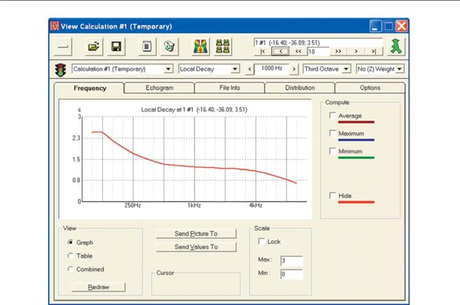
Use the Location control window to take a look at the projected Local RT Times for each of the 5 Seats. Note the variance from Seat to Seat.
The projected Sabine and Eyring RT Times are shown below for comparison. Be aware the scales for the three displays are different and take this into account while comparing the three projections.
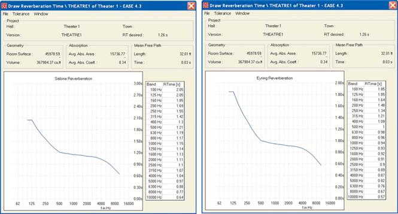
211
EASE 4.3 User’s Guide & Tutorial

Standard Mapping With Reflections
Standard Mapping uses a statistical formula to calcu-late reflected sound levels from the Direct Sound lev-els and the RT Times developed by either the Eyring or Sabine formulas. Standard With Reflections (avail-able under the Mapping pull down menu in either Area Mapping or Room Mapping) replaces the generalized Eyring or Sabine generated RT times with RT times developed by Ray Tracing. It is a more accurate method, but the calculations take considerable more time. How much more time depends on the complex-ity of the room, the number of loudspeakers involved, the number of Rays you choose to use, the Reflection Order you select and the speed of your computer.
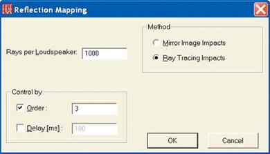
Selecting Standard With Reflections will initiate the fa-miliar four Calculation setup windows plus a fifth Ray Tracing setup window. If you decide to try it out so you can compare the results with those obtained with Standard Mapping, click on OK.
Two status windows will appear to keep you advised
of the status of the calculations. Note that the total
time is well over 3 hours. You may want to consider
using just a few Seats instead of all the Audience
Areas.
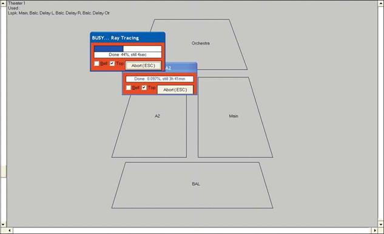
212
Chapter 10: Advanced Acoustical Investigations

Local Ray Tracing
Local Ray Tracing allows you to quickly take a more in-depth look at various spots around the room than Local Decay Times.
Like Local Decay Times, Local Ray Tracing can be ac-cessed from either Area Mapping or Room Mapping. Select Local Ray Tracing from the Tools pull down menu. Then click on a spot in one of the Audience Areas to establish the location of the Walker (Probe if you entered from Area Mapping). This will open a Ray Tracing setup window.
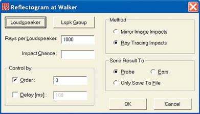
Accept the default settings and click on OK.
This will open a file name/location dialog window. As-sign a file name and click on OK.
The default settings of 1000 Rays per Loudspeaker and 3rd Order reflections are fine to provide a quick snap shot of what's happening at the chosen location. Far more Rays per Loudspeaker and much higher re-flection orders would be needed for a detailed investi-gation. The results of our 3rd Order study are shown in the following Reflectrogram.
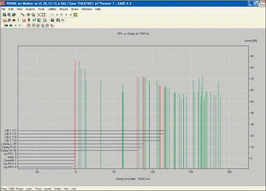
The red pulses represent direct sound and the green pulses represent the reflections that were picked up in the simulation. Note that click-ing on any pulse produces a readout giving the exact level and arrival time.
Local Ray Tracing also offers a number of other interesting displays, including MTF and STI. Check them out using the Tool Bar icons or the Graphs pull down menu.
213
EASE 4.3 User’s Guide & Tutorial

Ray Tracing Impacts (Find Impacts)
Find Impacts is a Ray Tracing option that registers rays that pass within a meter of the chosen point (impact upon a 1 meter counting bal-loon), stores the results and then automatically runs a mirror image routine to identify the impacts that hit the center of the counting bal-loon. Find Impacts requires a larger number of rays (100,000 or more in many cases) and higher reflection orders than Local Ray Tracing. It relies upon the laws of probability to identify an adequate number of impacts to ensure an acceptable degree of accuracy. The computa-tional time is proportional to the number of Faces; i.e., doubling the number of Faces doubles the time required. Find Impact results are suitable for detailed acoustical investigations and EARS auralizations.
From the Main window, select Ray Tracing from the Calculations pull down menu. Then select Ray Tracing Impacts from the Rays pull down menu to open the initial Find Impacts set up menu shown below. Notice that many of the choices are similar to the ones found under Ray Tracing.
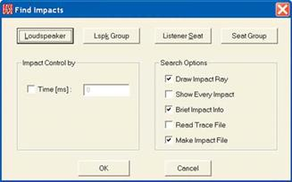
The four buttons at the top allow you to select the Loudspeakers and Listeners Seats that will be used in the study.
Keep in mind the difference between Ray Tracing and Impact Studies is that Impact Studies investigate only the Rays that hit (impact) a specific target, a 1 meter counting balloon surrounding the Listeners Seat. Ray Tracing does not record impacts. Find Impact does. To save time in this exercise, we’ll use the 5 Listeners Seats and only the Main loudspeaker and three Delay loudspeakers.
The search options are similar to the ones we explored under Ray Tracing, but now we want to make an Impact file. Put a check in Make Impact file. We could check Brief Impact Info and Draw Impact Ray but they would not add much information to the simulation and would lengthen the calculation time. The next step is to decide upon the length of the simulation.
A general rule for producing good Impact files in a reasonable period of calculation time is that the Room's Mean Free Path Time times the Reflection Order should be approximately equal to the Time Frame. The Mean Free Path Time for Theater 1 can be found in the Room Data folder. (Open the Project Data module, right click on the screen and then select Room Data from the Mouse Menu.)
It is .03 sec. This means that if we want to use a Reflection Order of 10, the Time Frame should be approximately 300 msec. Put a check in Time (ms) and enter 300 into the Time (ms) field. Then OK the setup.
The setup screen shown below will appear. Put a check in the Order selection box and Insert 10 into the Order field.
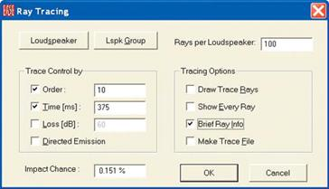
214
Chapter 10: Advanced Acoustical Investigations

Notice that this menu is identical to the one we worked with under Ray Tracing, except for having an Impact Chance field added. EASE will review our setup parameters and use the Impact Chance field to tell us what the odds are of registering all of the possible impacts. Ob-viously, the higher the percentage the more accurate the simulation.
Notice that the program entered a higher (longer) figure into the Time window than the one we entered in the previous menu. The previous figure defined the time frame from the first Impact. The figure shown in this menu also includes the time from when the first Ray is gener-ated to its first Impact. We'll use the 375 msec figure and start with an Order count of 10 and 100 Rays per Loudspeaker.
You'll notice the Impact Chance is quite small, so increase the number of Rays per Loudspeaker to 10,000 and then to 50,000. It takes a lot of Rays to get the Impact Chance over 50 %. 50% is not good enough for an auralization, so try 150,000 rays. This will improve the Im-pact Chance to almost 90%..
Notice that we did not check Make Trace File or Draw Trace Rays. Our objective is to make an Impact File and creating a Trace File or drawing the Trace Rays at the same time only significantly lengthens the computation time without serving any real purpose. We also did not check Directed Emission. Directed Emissions produces a weighted display that is used primarily to enhance Movie presentations.
We did, however, put a check in the Brief Ray Info box. This tells the program to flash brief information on each Ray and its color in the Ray Tracing control screen. Yellow indicates the Ray was cut off by the Time Frame before it impacted upon the Listener Seat. Magenta indi-cates that the cutoff was caused by the Reflection Order limitation. Blue Rays are ones that Impact upon the Listener Seat. During the sim-ulation, the Rays flash by so quickly you probably won't be able to see the blue flashes, but you should see a good mix of Yellow and Magenta flashes. If you only see Yellow, it's a sign that the Time Frame may be to short. All Magenta flashes indicates the Reflection Order probably should be higher.
Clicking on OK will introduce a prompt reminding you the Impact Chance is less than 100%.
Acknowledging the prompt by clicking on OK will open a new window giving you the opportunity to name the File and its destination. The simulation will start after you have entered this information and approved it by clicking on OK. Notice that after the simulation starts you will be given the approximate length of time the simulation will require. It will be significant. On our 2 GHz machine the estimate was just under 1 1/2 hours. A 50,000 Ray study would have taken about 40 minutes.
During the simulation, an informational box will keep you up to date on the progress of the study and the amount of time left.
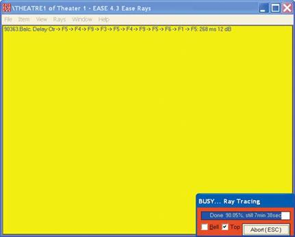
215
EASE 4.3 User’s Guide & Tutorial

When the simulation is complete, the .log screen shown below will open partially obscuring the Ray Control window. It records the parame-ters used for the simulation and summarizes the results in text form. If you want, you can print or save this information for future reference.
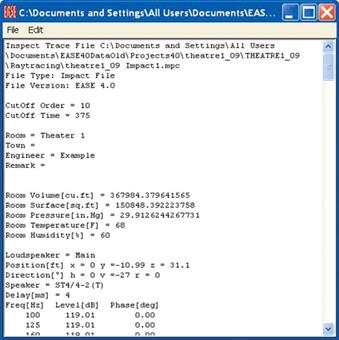
The Rays Control window now summarizes the results of the Impact simulation for you. As you can see from the screen shown below, over 8600 impacts were recorded. Note that the summary also tabulates the Impacts by their Order.
A prompt will also ask if you want to View Result File Now.
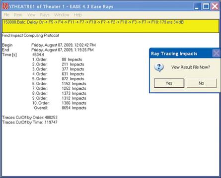
216
Chapter 10: Advanced Acoustical Investigations

View Impact File
Answering Yes will open the familiar View Trace File menu, except it is now called View Impact File and includes an Invoke Probe button.
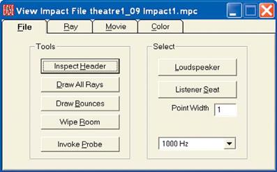
Acoustical Probe
Pressing the Invoke Probe button opens the Probe acoustical analysis program module and its wide range of acoustical analysis tools.
Prompts will appear giving you the opportunity to select what Loudspeakers and what Seats will be used in the analysis.
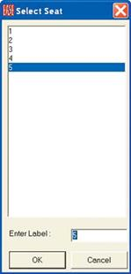
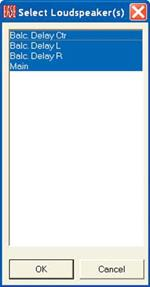
Remember, we created the Impact File using only the Main and Delay loudspeakers. It's possible you might want to turn some of them Off to get a better look at the effect of using, for example, just the main floor loudspeakers. We will use all of them as we want to see the full system's performance.
As soon as the Loudspeaker selection is approved by clicking on OK, another prompt will appear asking for your Seat selection. You will be allowed to select only one Listener Seat from those listed even if more than one Listener Seat was included in the Impact study. Remem-ber, the object of this investigation is to see what's happening at a specific spot.
It should be noted here that including all 5 Listener Seats in our Impact study instead of a single Seat did not increase the calculation time by a factor of five. Instead, it only increased the time by about 50%. Most experienced users will run their Impact studies on at least several strategically located Listener Seats at one time. They will also schedule their activities so the simulation can be run while they are doing something else, such as having lunch.
217
EASE 4.3 User’s Guide & Tutorial

Probe Displays
Selecting Seat 5 and approving the selection by clicking OK will start the process. When it is completed, a Reflectogram similar to the one shown below will appear. Don't expect the Reflectogram to appear instantly. EASE has a lot of data to review before it draws the Reflec-togram and it may take a minute or two. Be patient.
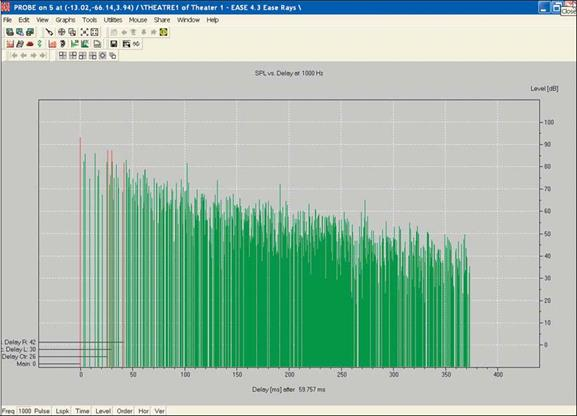
Now use your Mouse and the Cursor to select one of the Impact Pulses and introduce a readout on the screen showing the exact arrival time of that reflection and its exact level. Note that if you use your right Mouse button to select the Pulse, the program will write the same information on the screen.
Next, click on the Pick icon in the Tool Bar section and then click on another one of the Impact Pulses. Notice that the status bar below the Reflectogram now gives you the number of the Pulse you selected, its origination point, time of arrival, energy level, reflection order and ar-rival direction. This is all information that EASE has stored on every impact for each of the 21 frequency bands.
To check this out, click on the Frequency icon and choose a new frequency. The program will then quickly redraw the Reflectogram for the new frequency. If you want to look more closely at a certain section of the Reflectogram, use the F11 key stroke to Zoom In on the window or the Zoom icon and cursor to Zoom in on a section of the Reflectogram.
Select one of the Impact Pulses again and then minimize the Reflectogram and return to the View Impact File control window, select the Ray tab. Note that the control window identifies the Impact Pulse you selected, traces its patch Face by Face and gives you the Arrival time and level. The View Project window also traces the Impact Pulse’s path.
You can also view the reflections by Reflection Order. Go to the View pull down menu and select Reflection Order. Then select the Order you want to see, 3 for 3rd Order for example. EASE will now highlight all the 3rd Order Reflections. You can easily view other Reflection Orders by using Ctrl - or Ctrl + keystrokes to move to a lower or higher Order.
218
Chapter 10: Advanced Acoustical Investigations

The Waterfall is another interesting display. It's accessible by clicking on its tool bar icon or through the Graph pull down menu. You'll find it under Time Response. What makes the Waterfall interesting is that it shows at a glance the energy level and arrival time for each impact at each of the 21 frequencies.

Note that you can Zoom in on it to get a better view of a specific section and that you can also select any one of the Impulses by clicking on it. You most likely will notice that as you switch from one presentation screen to another, the Pulse selection follows making it easy to look at a particular pulse in several different ways.
The 3-D Hedgehog display shown below provides another interesting view. It shows the Pulse Directionality in a distinctive fashion. The 3-D Hedgehog display can be accessed either by clicking on its tool bar icon or in the Graphs pull down menu under Pulse Directionality.
You probably also noticed two other listings in the Pulse Directionality menu, Horizontal and Vertical. Selecting these produces vertical and horizontal views of the Hedgehog.
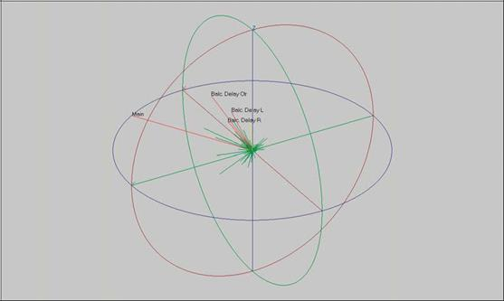
219
EASE 4.3 User’s Guide & Tutorial

Two more important EASE displays are the Impulse Response (IR) display and Energy Time Curve (ETC). EASE calculates the Impulse Response by convolving all 21 of the 1/3 octave band reflectograms with a Unity Sphere. This produces a monaural IR you could measure in real life with an omnispherical microphone. To look at the Impulse Response, click on the IR (Impulse Response) icon in the tool bar or use the Graphs pull down menu and select Time Response/Impulse Response.
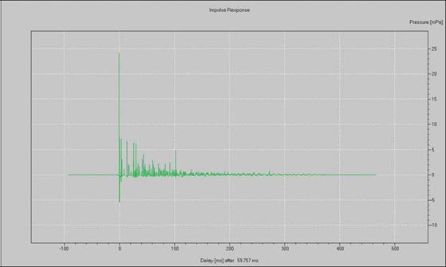
The Energy Time Curve (ETC) is developed by squaring and transforming the IR signal. Click on the Show ETC icon or use the Graphs pull down menu and select Time Response.
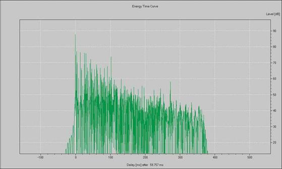
The Frequency Response curve shown on the next page is available by going to the Graphs pull down menu or by clicking on its tool bar icon. As you see, it shows both the 1/3 octave average energy levels and the detailed response curve. Also notice that you are looking at an A weighted curve. An unweighted curve can be obtained by going to the Frq.Rsp section of the Options folder and removing the check in the Levels in db (A) box. Use the Apply button to see the difference A weighting makes.
220
Chapter 10: Advanced Acoustical Investigations

You probably noticed a number of deep dips in the response curve. To find out how deep these are, select the Pick tool and then click on the response curve. This will turn the cursor into crosshairs that can be moved along the response curve with the right and left arrow keys. Let's check out the one that appears to be slightly below 3000 Hz. You'll find out the hole is actually at 2806 Hz and is over 30 dB deep.
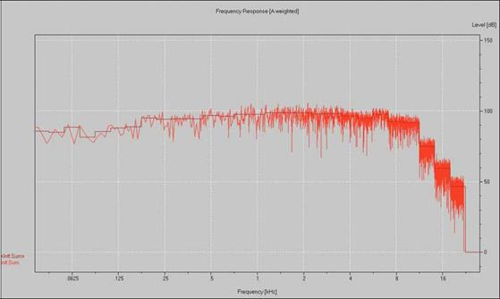
Another useful EASE feature is the use of MTF's (Modulation Transfer Functions) as a basis for high accuracy intelligibility predictions. The program uses the seven averaged frequency dependent octave band Impulse Responses to calculate by means of 14 modulation frequen-cies the MTI values. From these, EASE derives the MTF curves and the STI (Speech Transmission Index) for Standard (average), Male, and Female speech. To initiate this function, click on the Show MTF icon or go to the Graphs pull down menu, select Expectation Values and then MTF/STI. A typical MTF/STI display appears below.
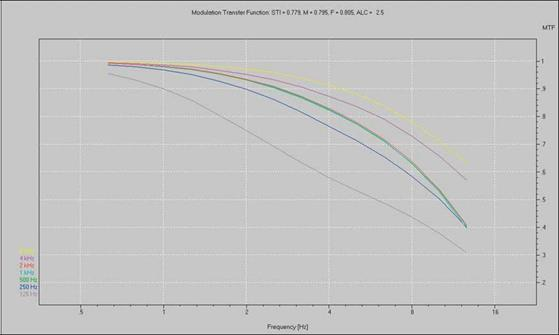
The calculated STI figures appear at the top of the screen; STI is the average figure, M is for Male speech and F is female speech.
221
EASE 4.3 User’s Guide & Tutorial

The Probe also allows you to look at Phase Angles in a Hedgehog type display. You'll find Phase Angles listed in the Time Response sec-tion under the Graphs pull down menu.
You are able to step through all of these presentations one by one by using the Arrow icons in the Tool Bar.
RT Displays & Schroeder RT
Our review of Probe functions wouldn't be complete without looking into the RT displays. Selecting Reverberation Time from the Reverber-ation section under the Graphs pull down menu will draw the RT curve calculated using the “Provided Formula”; the last RT Curve we looked at. In our case, it will probably be the Local Decay Time we looked at in the Room Investigations section of this Tutorial.
Then open the Options menu (hit F9 or right click on the screen and select Options from the Mouse menu) and open the Rev. Time tab.
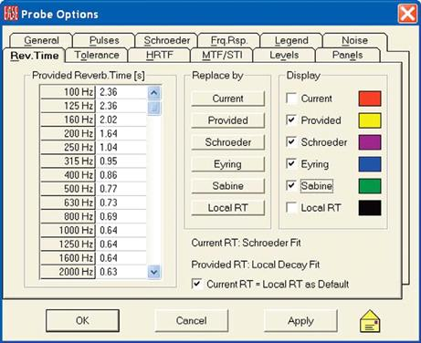
The Replace by section will change the display of the figures in the RT display for the chosen RT formula and then use these figures in any future Probe calculations using RT times. If Schroeder is chosen, the program will also calculate the RT time based on Schroeder's reverse integration formula and the Reflectogram's energy levels.
The Display section will draw the RT curves for the selected formula(s) on the RT graph. Note that before you will be able to see the Schroeder curve, you must first press the Schroeder button in the Replace By section to tell the program to calculate Schroeder RT fig-ures.
Let’s display the Schroeder RT Times , as well as those calculated by Eyring and Sabine formulas. Check all three.
As you can see from the curves show on the next page, there are noticeable differences between the projections.
In general, the RT times projected by Schroeder are considered to be more accurate. Remember, both Sabine and Eyring are generalized formulas. Schroeder is based on the declining energy levels projected by the program.
The RT times projected by Schroeder also will vary from Listeners Seat to Listeners Seat, while the generalized Eyring and Sabine formu-las produce only one RT time for the room. Another thing to remember while looking at the graph is that the scaling accentuates the differ-ences.
222
Chapter 10: Advanced Acoustical Investigations
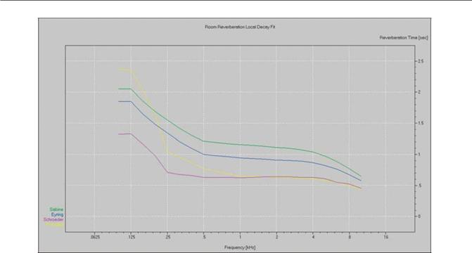
Let's try out the Schroeder backward integration method. If the Options menu isn't still open, open it (Options Menu [F9]) and select the Schroeder tab.
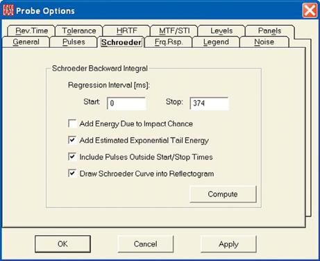
Note that Add Estimated Exponential Tail Energy and Include Pulses Outside Start/Stop Times are checked. When checked Add Estimated Exponential Tail Energy tells EASE to add and use a calculated tail in its RT calculations. Include Pulses Outside Start/Stop Times tells the program to use all the pulses in the Reflectogram even if some are outside the Start and Stop times entered for the Regression Interval.
Add Energy Due to Impact Chance is mainly used with short reflectograms to get realistic Reverberation Tails in the calculations. You'll want to check out the differences these settings make.
223
EASE 4.3 User’s Guide & Tutorial

Note that selecting Draw Schroeder Curve into Reflectogram will add the Schroeder curve to the Reflectogram. See below.
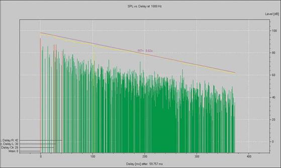
EASE also allows you to compare the rooms projected RT times to the times normally considered ideal for various types of usage. To ex-plore this option, go to the Reverberation section of the Graphs pull down menu and select Tolerance. This will add a Tolerance window to the graph.
Then open the Options folder (F9 or right click on the graph and select Options) and click on the Tolerance tab to open the Tolerance folder shown below.
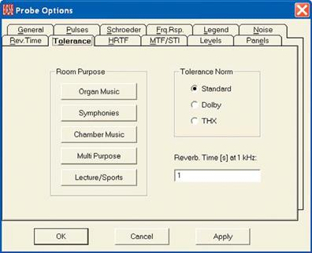
As you can see, you have a choice of 3 Tolerance Norms. The Standard Norm is based on European thinking and allows the rooms in-tended use to be taken in consideration. Dolby, as the name implies was influenced by US theater thinking, while THX is the standard used by Lucas Film for cinemas.
When Standard is selected as the Norm, The Room Purpose buttons produce a new tolerance window for the common usages shown. If you explore the variations you will find the 1 kHz RT times vary from a low of 1.2 for Lecture/Sport facilities to 2.2 for Organ Music.
224
Chapter 10: Advanced Acoustical Investigations
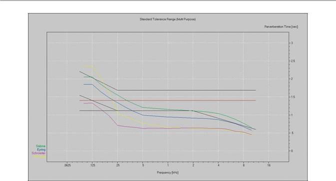
If you explore the variations, you will notice that the RT times of the Theater 1 room we have been using as a model are too low for good music reproduction. If you skipped the Optimize RT section of the manual, now would be a good time to review it and find out how EASE can help you determine what surface material changes would increase the RT time.
Also note that the RT times developed in the Probe module are used only in Probe calculations. If you want to use the Schroeder figures in EASE Mapping, you will need to manually copy them into Edit Room/Room Data/Room RT and then check RT Locked.
Before we move on to the next step, we should consider saving the Response file (Reflectogram) we generated from the Impact File. Oth-erwise, it will be lost when we exit this mode and will have to be recreated the next time we want to look at it. Selecting Save Response File As under the File pull down menu and following the prompts will take care of this. Now, exit from the Find Impacts/Probe program.
Mirror Image Impacts
Mirror Image Impacts is another way to produce Impact Files. It uses rays like Ray Tracing, but uses an algorithm to determine which rays will impact on the target and then traces only those rays. It seeks out 100 % of the impacts and leaves nothing to chance. But, the calcula-tions also take longer, especially in rooms having a large number of Faces. Mirror Image Impacts is not recommended for use in rooms having more than 40 Faces or in 10th order or higher reflections studies.
Impact Files generated by Mirror Image Impacts have the same characteristics as those generated by Ray Tracing Impacts and are treated the same by the View Impacts program. Selecting Mirror Image Impacts from the Ray Tracing pull down menu opens the control screen shown below.
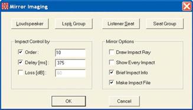
225
EASE 4.3 User’s Guide & Tutorial

If the same setup criteria is used as the criteria we used before in Find Impacts, namely a Reflection Order of 10 and a 375 ms Time frame, the calculation will take many hours. Ray Tracing Impacts completed the calculations in less than 3 hours when 200,000 Rays were used.
NOTE:
A general rule for producing good reflectograms in a reasonable period of time is that the Mean Free Path Time of the room times the Re-flection Order should approximately equal the Time Frame. The Mean Free Time can be found in the Room Data folder under the Edit pull down menu in Edit Project. It is .03 sec or 30 ms for Theater 1. A Reflection Order of 12 times 30 gives us 360 ms for the Time Frame.
With these parameters, 100,000 Rays per loudspeaker produces an 80.5 % probability factor. Refer to Chapter 11 on AURA and Chapter 12 on Auralization for more information on creating good reflectograms.
Split Impact File
If we had elected to use only one Listeners Seat when we created our Impact File using Find Impacts w would have had to run another simulation to look at other Listener Seat locations. We avoided this by using all 5 seats in our original Find Impacts study.
Many experienced users will use multiple Listener Seats in their simulations and set up any lengthy calculations at the end of the day so their computer work on them overnight. The disadvantage of this is the large files they produce. Our 5 Listener Seat Impact File, for ex-ample, is over 100 MB.
Split Impact File provides a means of easily breaking large, multiple Listeners Seat files into individual files. Activation of Split Impact Files brings up a prompt asking for the name of the file you want to split. Entering the file name and clicking on OK will split the file into as many files as there were Listeners Seats in the original file. The Files will identified with their Listener Seat name, for example by -1,-2, etc..
Update Impact File
Update Trace File allows you to change wall materials or loudspeaker models in a model and then quickly "update" (recalculate) associ-ated .trc Trace Files and .mpc Impact Files. Changes that can be accommodated also include loudspeaker aiming, delay and alignment. Geometric changes, such as relocating a Loudspeaker or rearranging Faces cannot be handled by this feature.
Operation is simple, open the Update Trace File window, enter the name of the file you want to update and then hit the OK button.
One word of caution about this feature. The Update Trace File routine upgrades the existing File; it does not create a new one. Thus, you will lose access to the existing file unless you first save it as a Response File or make a copy of it under another name.
226